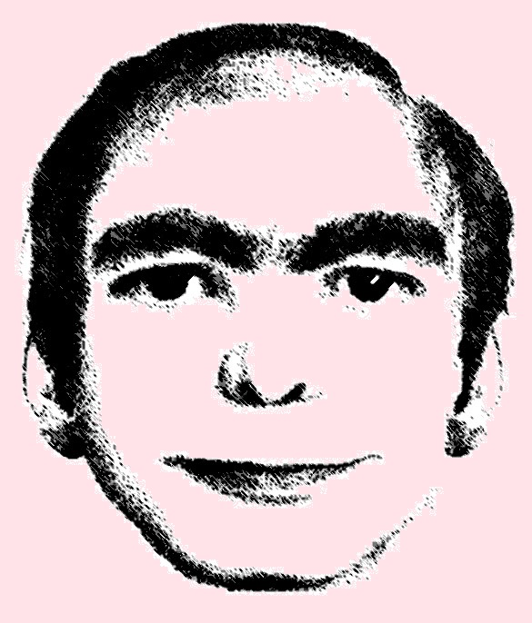

Looks like you've made a wrong turn
But that's alright. We all do that sometimes. You wind your way down the hallway full of unfamiliar sights, and then...

It's him. How strange, to finally see him in the flesh. A little disconcerting, walking among the white
rubble, not knowing where you are. But it is him. An old friend. Someone you've seen many times in your troubled
dreams. You stop and listen to the stillness of the void. He is as still as a statue, staring straight ahead. At you,
or at something? His lips slowly part, flesh unsticking, and he utters two words:
GO BACK